# packages:## for data handlinglibrary(sf)library(terra)library(dplyr)## for modellinglibrary(caret)library(ranger)library(CAST)## for visualizationslibrary(ggplot2)library(ggExtra)library(tmap)library(viridis)## for utilitylibrary(here)normalize =function(x){return((x-min(x))/(max(x)-min(x)))}
Simplified we can think of the featurespace as the “range” of predictors we have. Think about a case where we have only two predictors: bio2 and bio5. We plot each (normalized) predictor on one axis of a scatterplot. This is now our featurespace of the whole target area we want to predict - in this case, Europe. Depending on what predictors we choose (i.e. how we represent the environment) the featurespace looks different. And in reality, the feature space has as many dimensions as the number of predictors.
Code: feature space
predictors_simple = predictors[[c("bio2", "bio15")]] |>as.data.frame()# normalize both predictors between 0 and 1predictors_simple$bio2 =normalize(predictors_simple$bio2)predictors_simple$bio15 =normalize(predictors_simple$bio15)# plot each predictor on one axis, next to the scatterplot is the density of each predictorp =ggplot(predictors_simple, aes(x = bio2, y = bio15))+geom_point(size =0.5, alpha =0.5, shape =15)+coord_equal()+theme_bw()ggExtra::ggMarginal(p, type ="density")
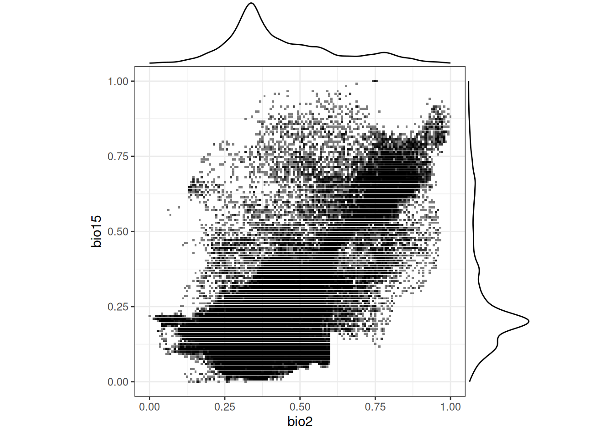
Our reference samples we use for the model training now contain a subset of this featurespace. And depending on the sampling design (random or clustered) we cover different parts of the feature space better or worse. Here we plot the feature space of the reference samples along with the feature space of the entire target area.
Code: feature space with samples
# create new column to indicate different groups for coloringpredictors_simple$sampletype ="predictorspace"# create one long dataframe that contains all the points we want to plotpts_simple =rbind(predictors_simple,data.frame(bio2 =normalize(pts_random$bio2),bio15 =normalize(pts_random$bio15),sampletype ="random"),data.frame(bio2 =normalize(pts_clustered$bio2),bio15 =normalize(pts_clustered$bio15),sampletype ="clustered"))# factor for better order and visibility in the plotpts_simple$sampletype =factor(pts_simple$sampletype, levels =c("predictorspace", "random", "clustered"))p2 =ggplot(pts_simple, aes(bio2, bio15, color = sampletype, alpha = sampletype,size = sampletype, shape = sampletype))+geom_point()+scale_color_manual(values =c("black", "red", "blue"))+scale_alpha_manual(values =c(0.2, 1, 1))+scale_size_manual(values =c(0.5, 1, 1))+scale_shape_manual(values =c(15, 3, 4))+coord_equal()+theme_bw()+theme(legend.position ="bottom")ggExtra::ggMarginal(p2, groupColour =TRUE, type ="density")
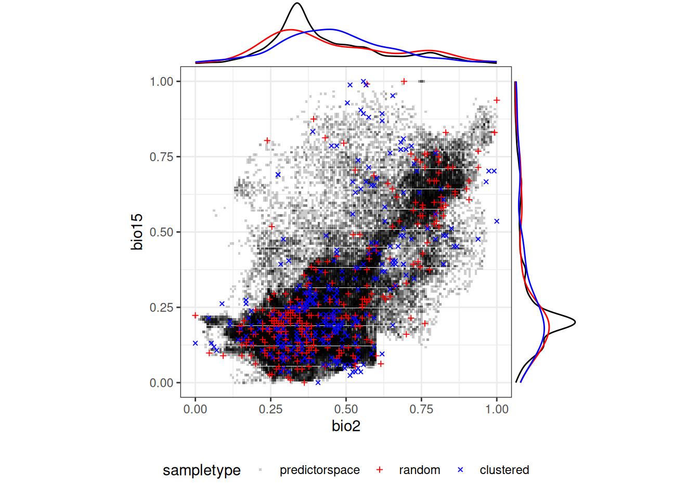
Our goal is now to figure out which areas (i.e. pixel in the predictor raster) are represented in our reference samples in terms of their featurespace. Only in these areas a machine learning model can be validly applied. For this, we use the aoa function in CAST.
Dissimilarity Index
The calculation of the Dissimilarity Index (DI) is part if the aoa function and very straight forward. In its simplest form, all we need are the predictor data and the extracted reference sample data.frame. We can specify which layers of the raster and which columns of the data.frame the function should use by providing a variables argument. Here we use all the available predictors again.
No trainDI provided. Computing DI of training data...
note: variables were not weighted either because no weights or model were given,
no variable importance could be retrieved from the given model, or the model has a single feature.
Check caret::varImp(model)
note: No model and no CV folds were given. The DI threshold is therefore based on all training data
Computing DI of newdata...
Computing AOA...
The function will notify us about some things:
the computation of a trainDI,
that we provided no weights, and
that we provided no model, no CV folds and that the DI threshold is therefore based on all training data.
We will clarify these notifications later on and see what options we have here. But first let’s have a look at the DI based on the clustered reference samples. You can notice low DIs around our sample clusters and higher DIs in areas without samples. Some regions in Scandinavia even have very high DIs which indicates that these environments are not represented in the training samples.
Code: DI Map
tm_shape(AOA_clustered$DI)+tm_raster(style ="cont",palette =mako(50, direction =-1),breaks =seq(0,2,0.5))+tm_shape(pts_clustered)+tm_dots()
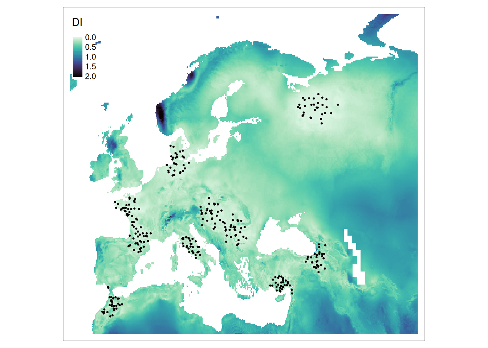
Area of Applicability
What can we do now with the Dissimilarity Index? The aoa function also computed a second raster layer: the Area of Applicability (AOA). The AOA is a threshold based classification of the DI and indicates if the featurespace of a pixel is too dissimilar to the feature space of the reference samples (AOA = 0). We consider prediction outside the AOA as invalid.
If you plot the raw output of the aoa function, you will get a figure that indicates:
the density distribution of DIs between the reference samples (trainDI)
the density distribution of DIs the new locations (predictionDI)
the DI threshold where we consider a pixel outside the AOA
plot(AOA_clustered)
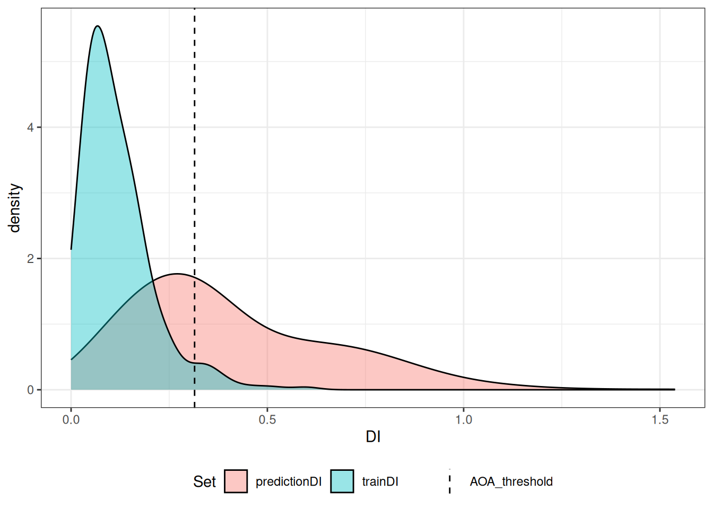
But how is this threshold calculated? In this simple case (without a model and cross-validation, as noted by the message above) the threshold is the outlier removed maximum dissimilarity between all reference sample points. The DI between references samples is also stored along with other important information in the object we got back from the aoa function, called parameters.
# The DI threshold is the upper whisker of a boxplot# of the DI between training samplesboxplot(AOA_clustered$parameters$trainDI, horizontal =TRUE)
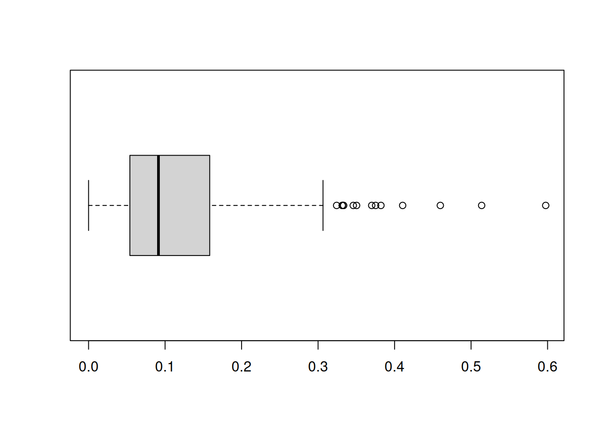
This parameters object is the output of the function trainDI. Hence, we can compute the information related to the reference samples separately from the computation of the AOA for a prediction area. And later use the created parameters in the aoa function (This is the first message from the aoa function above). This can save a lot of time and resources if you want to test different sampling strategies, models or predictors and their influence on the DI and enables paralellization options (see CAST vignette). Let’s do that for the random sample.
Note
On the R help page of trainDI you can find an explanation for all the output list entries.
# compute dissimilarity between training samples (for DI threshold)tdi_random = CAST::trainDI(train = pts_random |>st_drop_geometry(),variables = predictor_names)
note: variables were not weighted either because no weights or model were given,
no variable importance could be retrieved from the given model, or the model has a single feature.
Check caret::varImp(model)
note: No model and no CV folds were given. The DI threshold is therefore based on all training data
# use the trainDI object in the aoa functionAOA_random = CAST::aoa(newdata = predictors,trainDI = tdi_random)
Computing DI of newdata...
Computing AOA...
Code: Figures, Random Sample
plot(tdi_random)plot(AOA_random)tm_shape(AOA_random$DI)+tm_raster(style ="cont",palette =mako(50, direction =-1),breaks =seq(0,2,0.5))+tm_shape(pts_random)+tm_dots()tm_shape(AOA_random$AOA)+tm_raster(style ="cat", palette =c("grey40", "grey90"))+tm_shape(pts_random)+tm_dots()
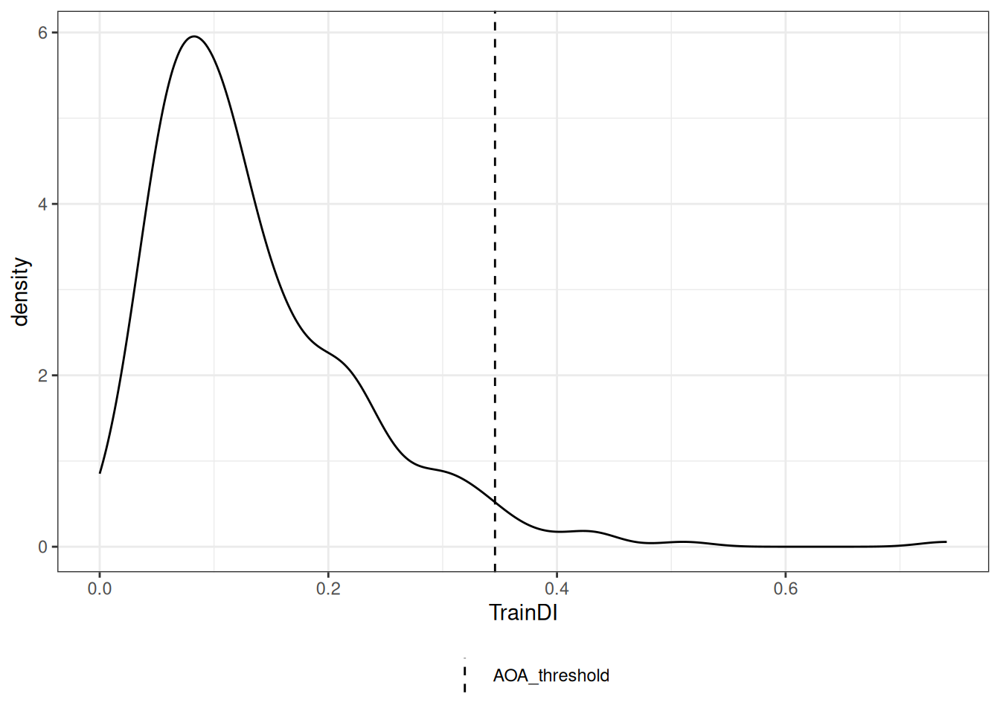
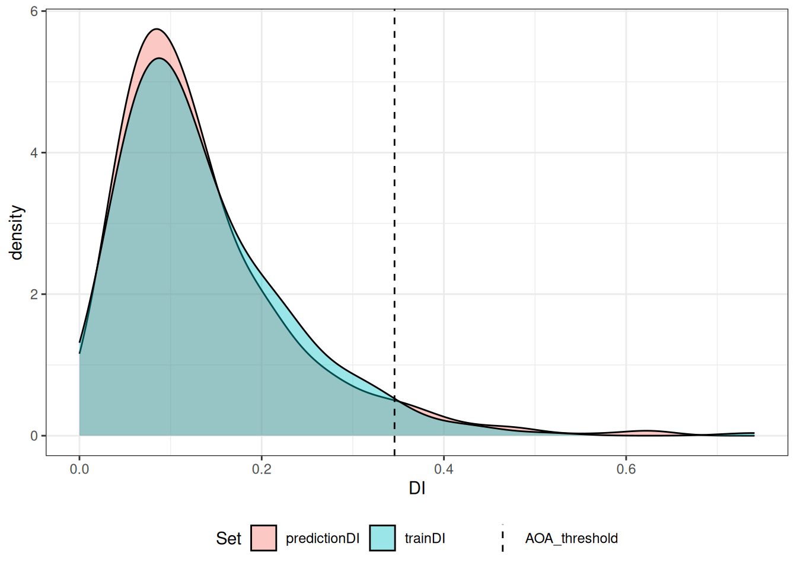
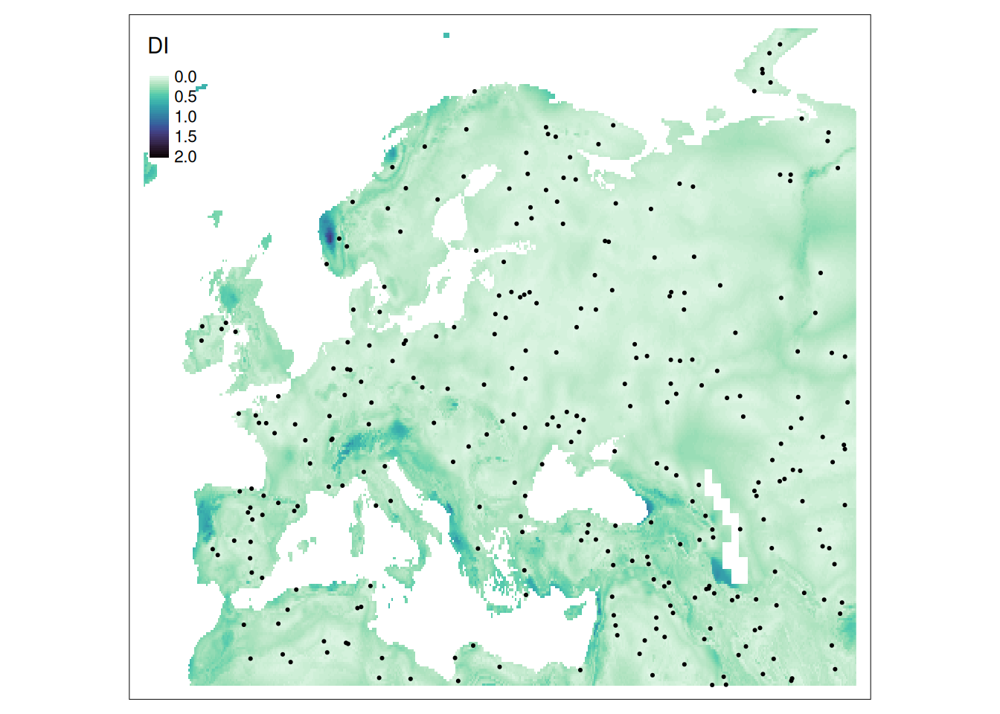
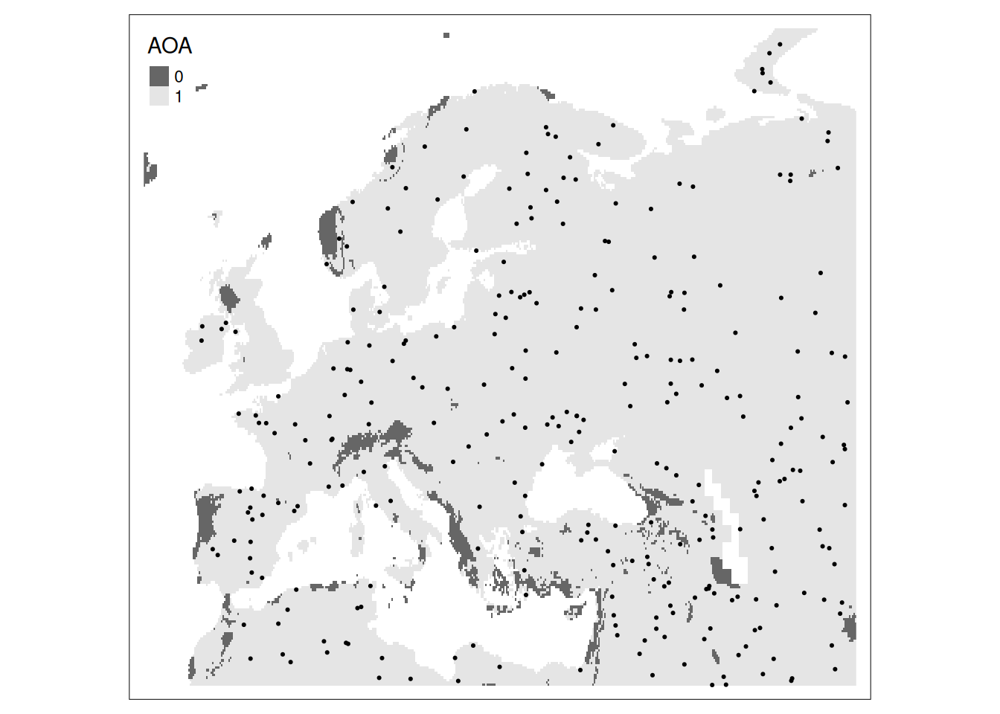
AOA of a model
Until now, we did all examples with the reference points and predictors only. However, the Area of Applicability was developed to enhance the validation of predictions of a spatial prediction model. Hence, the true power of the AOA is demonstrated when we use it in conjunction with a machine learning model and the associated cross-validation strategy that is used to evaluate the model (See Chapters XXX). So first of all, lets build a model and evaluate it via cross-validation (See Chapters XXX).
Random Forest
300 samples
13 predictor
No pre-processing
Resampling: Cross-Validated (10 fold)
Summary of sample sizes: 271, 269, 269, 271, 268, 270, ...
Resampling results:
RMSE Rsquared MAE
0.04737605 0.9622177 0.03137413
Tuning parameter 'mtry' was held constant at a value of 5
Tuning
parameter 'splitrule' was held constant at a value of variance
Tuning parameter 'min.node.size' was held constant at a value of 5
Setting the right parameters
The aoa and calibrate_aoa function require certain information form the model object that are not computed by default. First, setting the importance argument gets us the variable importance in the random forest model from the ranger package. Additionally in trainControl we have to set savePredictions = TRUE in order to keep the outputs of the individual cross-validation predictions.
If we have a model, we can now simply use it in the aoa function. The reference samples are no longer necessary since they are stored in the output of caret::train.
AOA_rf_clustered_rcv =aoa(newdata = predictors, model = rf_clustered_rcv)
No trainDI provided. Computing DI of training data...
Computing DI of newdata...
Computing AOA...
Notice that the messages about weightings and the DI threshold are gone. Since we specified importance = "permutation" in the train function, out model output contains the variable importance. We see that some variables are more important than others and we want to use this information in the computation of the dissimilarity index. If a variable is less important, it should have less impact in the calculation of the DI. Hence, before the calculation of the DI, predictors are weighted based on their importance in the model.
# predictor importance in the modelplot(varImp(rf_clustered_rcv))
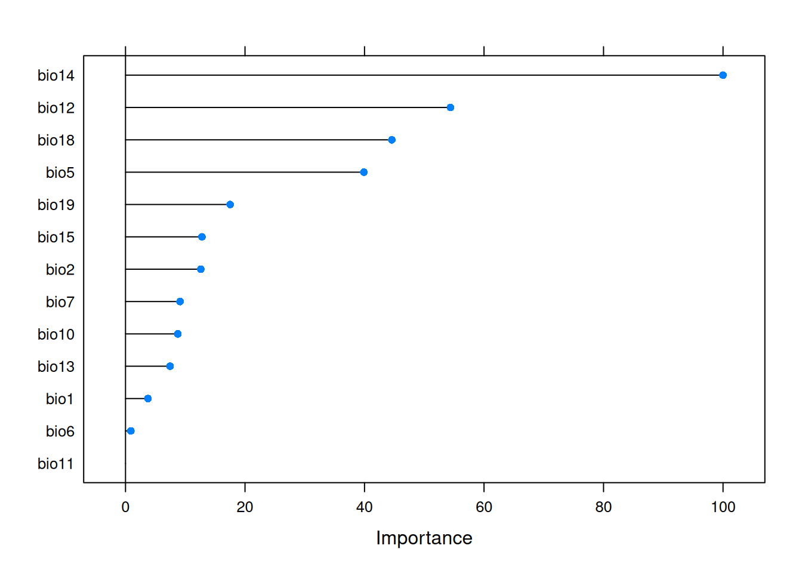
# predictor weights in the calculation of the DIAOA_rf_clustered_rcv$parameters$weight
plot(AOA_rf_clustered_rcv$AOA, main ="AOA: clustered samples, weighted with variable importance")plot(AOA_clustered$AOA, main ="AOA: clustered samples, unweighted")
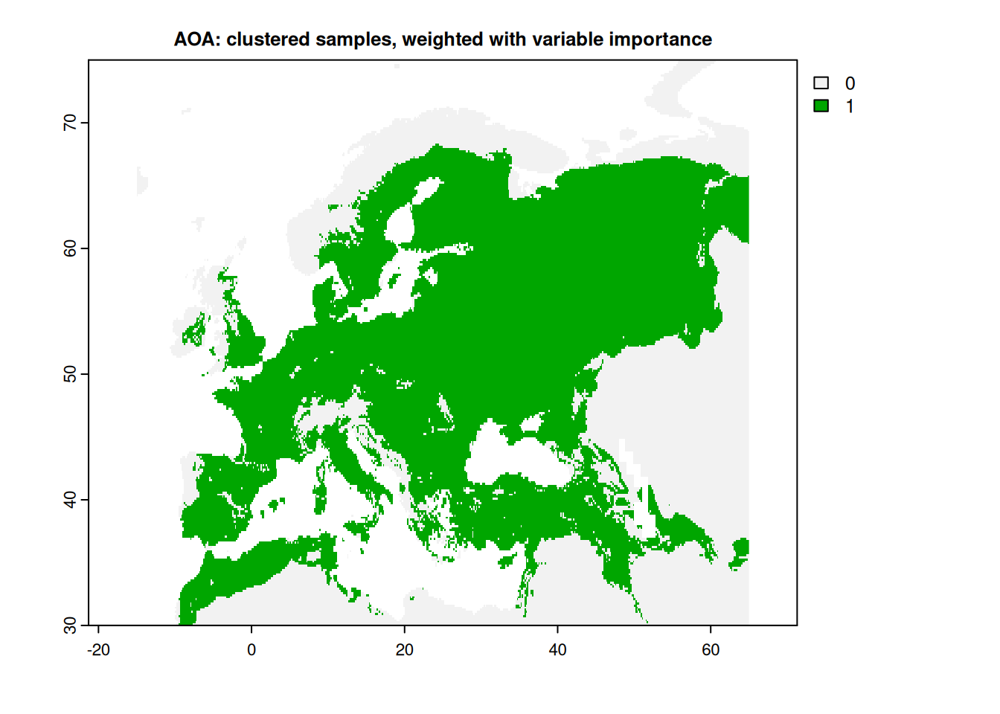
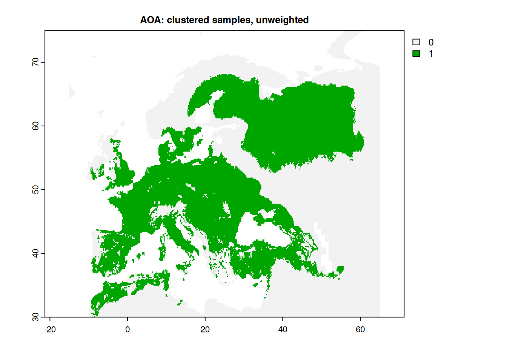
The computation of the trainDI now takes the cross-validation into account. Instead of computing the dissimilarity between all reference samples, we now compute the dissimilarity between samples in different cross-validation folds.
Predictions inside the AOA are based on predictor values that are similar enough to those in the training samples. The chosen cross-validation strategy tested the model performance on reference samples with a certain dissimilarity index. Hence, predictions on pixel that are more dissimilar than the maximum dissimilarity we observed during cross-validation are not evaluated. We cannot make an assumption about the prediction quality here and mask the prediction. The pixel is outside the AOA.
Based on this, different cross-validation strategies lead to different AOAs.
# compare knndm AOA with random AOA
Calibrate AOA
We can “translate” the DI to an expected error for a pixel based estimation of the map quality.
calib_rf_clustered =calibrate_aoa(AOA_rf_clustered_rcv, model = rf_clustered_rcv)
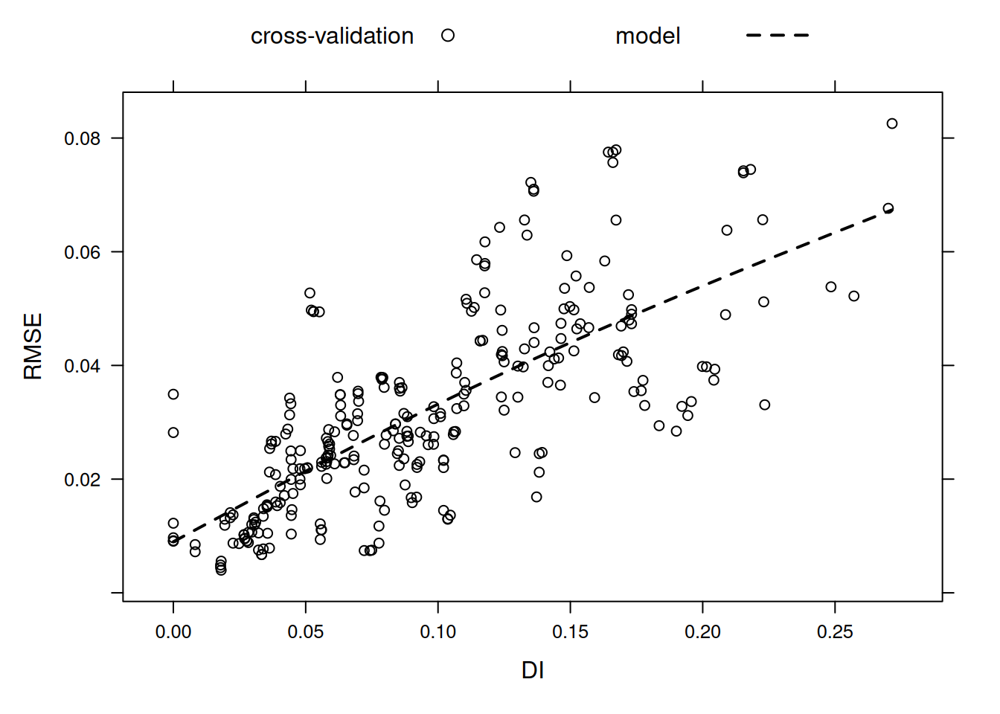
Applying this model to the DI gives us a map of expected error. Of course, some areas are still to dissimilar for a meaningful prediction and get masked of by the AOA.
No trainDI provided. Computing DI of training data...
Computing DI of newdata...
Computing AOA...
Warning in nominalTrainWorkflow(x = x, y = y, wts = weights, info = trainInfo, :
There were missing values in resampled performance measures.
No trainDI provided. Computing DI of training data...
Computing DI of newdata...
Computing AOA...
Warning in nominalTrainWorkflow(x = x, y = y, wts = weights, info = trainInfo, :
There were missing values in resampled performance measures.
No trainDI provided. Computing DI of training data...
Computing DI of newdata...
Computing AOA...
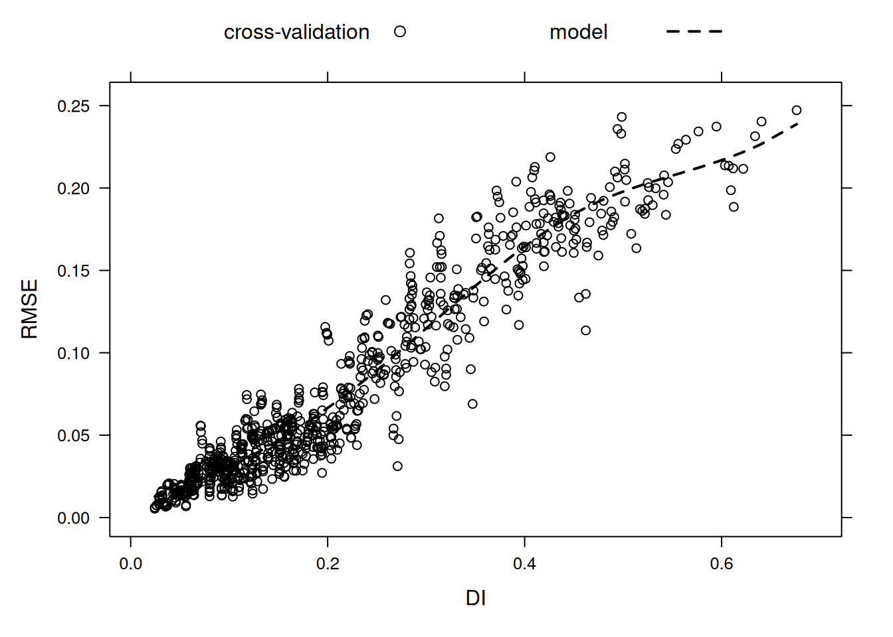
Because we tested our model by cross-validation with much more dissimilar folds (by clustering them in feature space), we can assume that our expected error is valid for more dissimilar places in our prediction area. Areas that were previously outside the AOA are now considered inside the AOA, but with a higher estimated error. We can extend the color scale of the expected error in order to make this more visible.